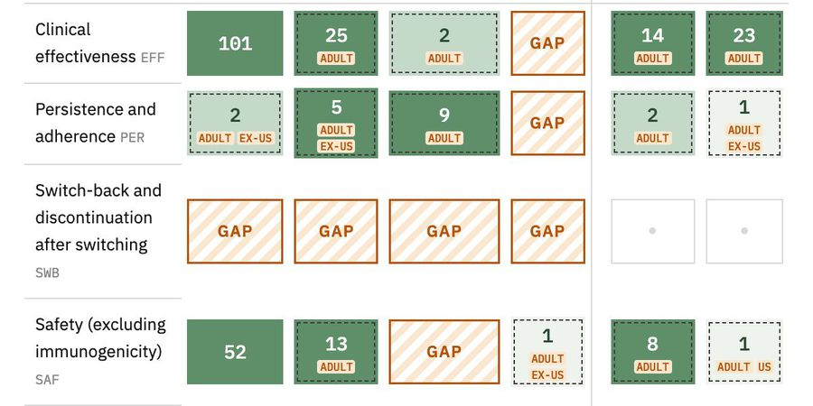
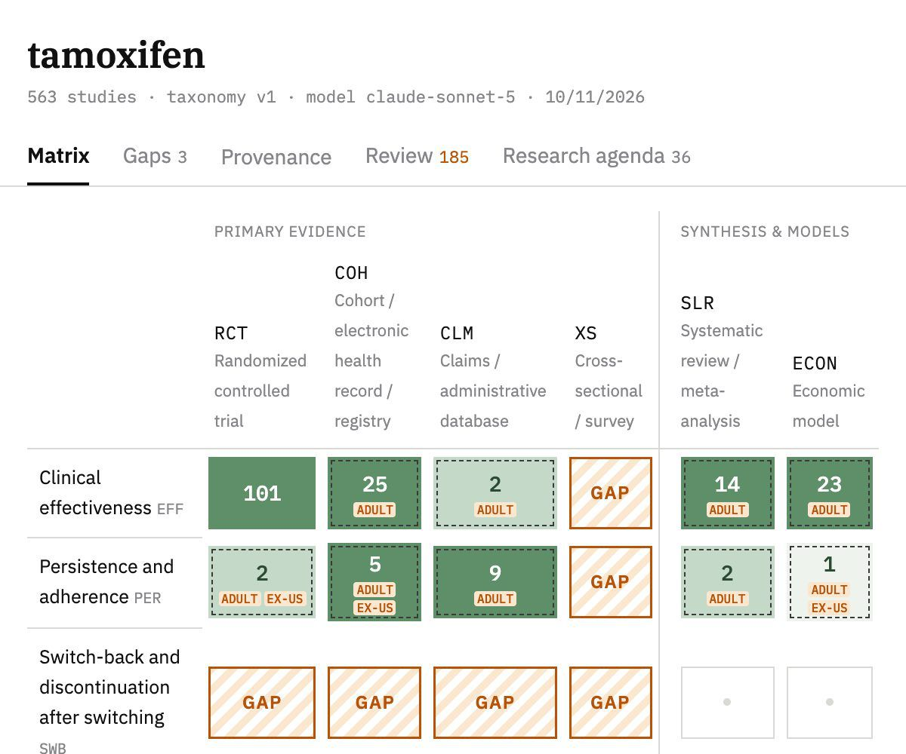
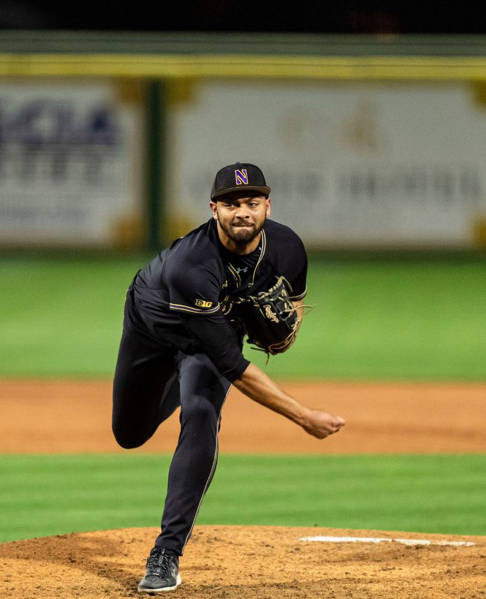

Evidence Gap Mapper
Name a drug. It pulls the literature from PubMed and ClinicalTrials.gov, has an LLM classify every study, and shows where the evidence is missing.
Live app I built and run alone, from retrieval to UI.
AI engineer · New York
I build AI agents and machine learning models.


Name a drug. It pulls the literature from PubMed and ClinicalTrials.gov, has an LLM classify every study, and shows where the evidence is missing.
Live app I built and run alone, from retrieval to UI.
Forecasts each player's next-season PER from what is known at the end of the season, tested on 20 seasons against a tuned baseline.
Beats the baseline in all 4 test periods: MAE 1.88 vs 2.02.
A gradient-boosted model of the umpire's call that runs in your browser, built on 1.06M called pitches and tested on 708K later ones (94.2% accuracy). Change the pitch or the count and watch the zone move.
Same corner four-seamer: 69% strike at 0–2, 88% at 3–0.

I pitched at Northwestern and made the Big Ten All-Academic team in 2023, 2024 and 2025.
I have a B.A. in Data Science from Northwestern and am finishing an M.S. in Management Science & Engineering at Columbia.
More on GitHub.